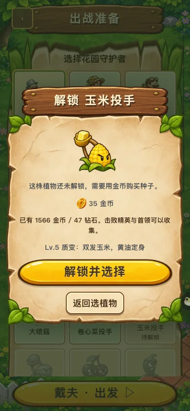
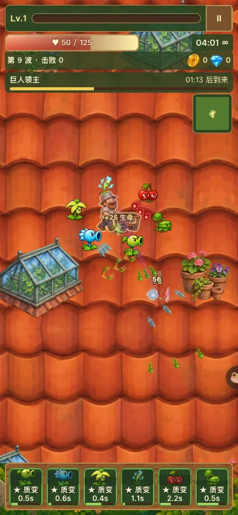

植物幸存者 v0.10 · 无限生存改版
打开游戏 · 12 尺寸 / 180 场景截图 · 原始汇总 JSON · 生产包操作检查
80 项机制回归、4 项打包测试、180 场景布局检查通过。81 组固定种子模拟：67 组击败首领，79 组在 10 分钟观察结束时仍存活。
以下为项目实际运行截图，使用开发环境确定性战斗场景；不是生图原稿。生产环境另验证真实触摸、暂停、存档和资源加载，未启用 QA 注入入口。
15 项需求交付
相同负载性能对比
旧版：68ff351f4fb38ea7b5283e29a714ccb8699a4b86。每格 2 轮，各 180 帧有效采样；数值为两轮“总脚本 p95”的算术平均，单位 ms。Canvas 780 × 1382，Chromium 视口仿真、同一主机；不是实体手机 FPS。
正式上限为 160 怪 / 240 投射物 / 80 敌弹；4× 下新版 p95 为 8.75 ms，旧版 7.70 ms，新增美术有可测开销。超量 320/800/160 场景帧间隔约 35 ms，不能宣称所有场景均为 60 FPS。
基线逐轮数据 · 新版逐轮数据 · 81 组战斗模拟 · 保留的首轮失败 · 机制回归日志
连续运行
390 × 844 视口保持 5.0 分钟，17985 帧，JS 错误 0；帧间隔 p50 / p95 / p99：16.7 / 18.6 / 18.7 ms。结果：通过。 完整采样
10 秒真实战斗录像
模型生成的素材已接入运行时；录像包含角色、植物环绕、弹药、首领攻击和音效。
解锁与回血
灰色卡片与解锁说明

实时拾取：50 → 75 HP

无时间限制不等于必然一直存活；高波次怪物生命和精英压力仍增长。地图装饰为视觉资产，未额外实现障碍寻路。原版音乐沿用作者官方播放器，需联网与手动播放；本轮没有将其改为下载音轨。
源码内容指纹 645e40ca9186d5f9fc448af50fab1ea2b2af8f71a1ba0de157f7f99636c2e933 · 2026-11-17T14:25:27.726Z